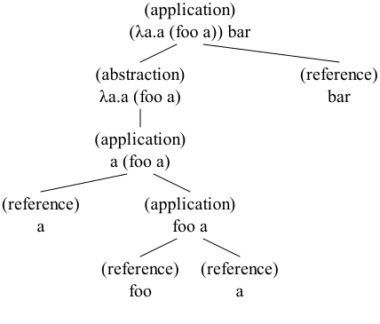

2017-07-24
What do the lambdas?
An expression is one of the following:
- <identifier> (variable reference)
- λ<identifier>.<exp> (function abstraction, but sometimes we’ll just call it a lambda)
- <exp> <exp> (function application)
Is like tree. Variable references are leaves. Function application branches into two sub-trees, one for function and one for argument.
Function application is left associative. So “a b c” and “(a b) c” works out the same.
For example, can take a look at expression “(λa.a (foo a)) bar” and its sub-expressions:
- “(λa.a (foo a)) bar” is a function application with a function “(λa.a (foo a))” and an argument bar
- “λa.a (foo a)” is a function abstraction with a parameter x and a body “a (foo a)”
- “a (foo a)” is a function application with a function a and argument “foo a”
- “foo a” is a function application with a function foo and argument a
And we can do a little tree-drawing, maybe like this:
(So really, syntax is mostly like in an ML family language or a Haskell or something. Only instead of like, “fn x => foo” or “fun x -> foo” or “\x -> foo”), we do “λx.foo”. Andalso there’s never any infix stuff for function application.)
Evaluation is mostly: (λ𝐱.𝐁) 𝐀 ⟶ [𝐀/𝐱]𝐁.
Meaning something like, a “reducible expression” (the bit to the left of the arrow) is:
- a function application
- with a function-part that is a function abstraction, with some identifier 𝐱 as its parameter and some expression 𝐁 as its body
- and with an argument-part that is some expression 𝐀
And if we have a reducible expression, then we can do “beta reduction”: Substitute the argument 𝐀 for every free occurence of the parameter 𝐱 in the body 𝐁, and replace the whole function application with the result of that.
(The part that goes [𝐀/𝐱]𝐁 means that substitution thing: B but with every free x replaced with 𝐀. So (λ𝐱.𝐁) 𝐀 ⟶ [𝐀/𝐱]𝐁 is a bit like a pattern match on the syntax of an expression. The expression to the left of the arrow binds the variables 𝐱 and 𝐁 and 𝐀, and the expression to the right uses them.)
Can try. With the expression “(λz.z bar) foo”, the parameter 𝐱 is z, the body 𝐁 is “z bar”, and the argument 𝐀 is foo. So for this “instance” of (λ𝐱.𝐁) 𝐀 ⟶ [𝐀/𝐱]𝐁 we get “(λz.z bar) foo ⟶ [foo/z]z bar”. It should evaluate to the body “z bar” with every free z replaced by the argument foo: “foo bar”.
(λz.z bar) foo
A variable reference is free if it is not bound by a parameter in a function abstraction. With the expression “(λz.z (λz.bar z) bar) foo”, the parameter 𝐱 is z, the body 𝐁 is “z (λz.bar z) bar”, and the argument 𝐀 is foo. Here, only the first z in the body “z (λz.bar z) bar” is free, so only that one is replaced with foo.
(λz.z (λz.bar z) bar) foo
(In maybe more programmy jargon, we could maybe say that the inner z shadows the outer.)
Sometimes we have to change the names of some variables before doing beta reduction, in order to avoid having “variable capture” change the meaning of our expression. With the expression “(λx.λy.y x) y”, the parameter 𝐱 is x, the body 𝐁 is “λy.y x”, and the argument 𝐀 is y. If we just replace the x in “λy.y x” with y, we get “λy.y y”. Our argument-y becomes bound (“captured”) by the parameter of the lambda within the body. Since we should be able to keep referring the outer y, we change the name of the parameter of the lambda (and all references to it) before we do beta reduction. (ctrl+enter two times, since the first one will just rename the parameter)
(λx.λy.y x) y
That’s mostly it. We:
- look through our expression-tree in some order
- maybe find a reducible expression
- rename things if necessary
- and do the substitution thing
The order we look through the expression-tree is “normal order”. We check the outermost expression first, and then the function-parts of applications before the argument-parts. If we can’t find any reducible expression, then the expression is on “normal form”.
Typically we want to evaluate something down to normal form. So we run through those steps over and over until it is. (If we’re unlucky that takes actually forever. But that’s kind of fun too.)
Can do (ctrl+shift+enter) to evaluate the following until it’s on normal form:
(λz.z foo) (λx.λy.x bar y) quux